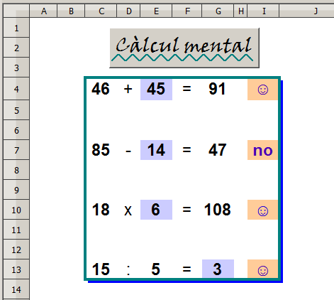

Presentació gràfica de l'activitat

Funcions que es fan servir en aquesta activitat
Objectiu de l'activitat
Practicar el càlcul mental amb operacions bàsiques.
Desenvolupament de l'activitat
1. Obrir el calc i canviar el nom de Full1 pel de M5P1 càlcul mental.
2. Fer que les cel·les del rang C4:G13 tinguin un format (atributs de les cel·les) semblant al de la presentació de l'activitat.
3. Escriure a la cel·la G4: =SI(A1=0;ALEATENTRE(1;100))
4. Escriure a la cel·la C4: =SI(A1=0;ALEATENTRE(1;G4))
5. Escriure a la cel·la I4: =SI(E4="";"";SI(C4+E4=G4;"☺";"no"))
16. Crear un botó de prémer Controls de formulari i assignar-li la macro feta anteriorment.
17. Validar la cel·la A1 per al valor 0.
18. Protegir les cel·les que convingui.
19. Ocultar les cel·les que convingui.
20. Comprovar que l'activitat funcioni correctament.
21. Desar el fitxer amb el nom de M5